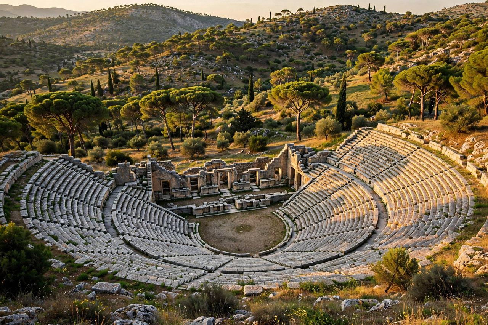

Epidaurus (Greek: Επίδαυρος) was a small city in ancient Greece on the Argolid Peninsula of the Peloponnese, best known for its sanctuary of Asclepius, the god of medicine, and for its exceptionally well-preserved ancient theatre. The Sanctuary of Asklepios at Epidaurus was inscribed on the UNESCO World Heritage List in 1988.
| Epidaurus | |
|---|---|
| Region | Argolis, Peloponnese, Greece |
| Known for | Sanctuary of Asclepius; ancient theatre |
| Theatre capacity | About 13,000–14,000 |
| UNESCO | World Heritage Site (1988) |
From the 4th century BC Epidaurus became the most celebrated healing centre of the classical world. Pilgrims seeking cures slept in the abaton, hoping for a healing dream-visitation from the god; inscribed stelae recorded miraculous recoveries. The sanctuary included temples, a gymnasium, a stadium, baths and a circular building, the Tholos, attributed to the sculptor Polykleitos the Younger.
The theatre, built around 340–330 BC and also attributed to Polykleitos the Younger, is famed for its symmetry and extraordinary acoustics: a whisper or a dropped coin on the orchestra floor can be heard in the topmost of its 55 rows of seats. Buried under sediment for centuries, it was excavated in the 19th century and returned to use in the 20th; it now hosts the annual Athens and Epidaurus Festival's productions of ancient drama.
See also: Ancient Greek theatre · Asclepius